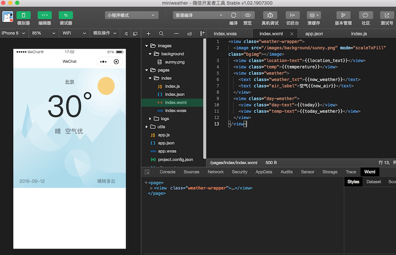

园龄6年8个月了，还一篇文章都没写过，惭愧！
最近周末做了个天气预报小程序，在这里整理一下开发过程和注意点，给对小程序开发感兴趣的伙伴们提供点参考。
废话不多说，先上图最终效果：
下面进入正文：
0. 把微信小程序开发文档过一遍。https://developers.weixin.qq.com/miniprogram/dev/framework/ 作为程序员，就要从0开始计数。
1. 下载安装微信开发者工具（https://developers.weixin.qq.com/miniprogram/dev/devtools/download.html），这个就不多说了。
2. 设计产品原型，我们要把产品做成什么样。
先晒一下第一版的原型，比较丑，见谅。（第一版丑和简陋先忍，后面可以迭代）
下面的代码也会是第一版，功能没有上面扫码看到的那么多。我是希望能从0开始写起，然后把每次迭代也写上，让大家能看到一个项目是怎么从第一版最简陋的功能，逐步功能丰富和完善。这才是一个项目真正的开发过程。一开始就做的很复杂很完备的，往往容易难产。
然后我们接口需要向页面提供的信息就明确了：位置名、实时温度、天气文字、空气文字、今日日期、今日天气状况。
【10点20了，终于下班到家，有时间继续补充了】
打开微信开发者工具，创建一个新项目。暂起名“miniweather”（名字不重要，以后可以随时改）。如下图：
创建完成后，默认微信开发者工具就把项目编译预览出来了，效果如下。
点击“获取头像昵称按钮”，界面变成如下：
（请忽略我吊炸天的微信名）
由于咱们这个天气预报只有一个页面，就直接在index这个页面改起，没必要创建新页面了。
删掉index.wxml中的全部代码，稍后重写。
删掉index.wxss中的全部样式代码，稍后重写。
咱们从头写起。如果你熟悉html和css，那么这个wxml和wxss就很容易上手了。
先贴代码如下
index.wxml：
1 <view class="weather-wrapper">
2 <view class="location-text">北京</view>
3 <view class="temp">30°</view>
4 <view class="weather">
5 <text class="weather_txt">晴</text>
6 <text class="air_label">空气优</text>
7 </view>
8 <view class="day-weather">
9 <view class="day-text">2019-09-12</view>
10 <view class="temp-text">晴转多云</view>
11 </view>
12 </view>
上面wxml( 相当于web开发的html )就这么12行。把页面需要的元素列出来，并加了对应的class名，稍后我们可以针对class设置样式。
现在的效果是这样的：
页面没有任何样式，但是基本内容都有了。
接下来，编辑index.wxss文件（wxss相当于web开发的css），把样式加上。
仍然是先贴代码：
index.wxss
1 .weather-wrapper{
2 position: relative;
3 padding-top: 20rpx;
4 padding-bottom: 250rpx;
5 }
6 .location-text{
7 text-align: center;
8 }
9 .temp {
10 text-align:center;
11 font-size:200rpx;
12 line-height:280rpx;
13 opacity:0.8;
14 }
15 .weather {
16 text-align: center;
17 font-size: 40rpx;
18 line-height: 56rpx;
19 opacity: 0.65;
20 }
21 .air_label{
22 margin-left: 20rpx;
23 border-radius: 10rpx;
24 padding:8rpx;
25 }
26 .day-weather {
27 display: flex;
28 align-items: center;
29 position: absolute;
30 bottom:0;
31 left: 40rpx;
32 right: 40rpx;
33 height: 90rpx;
34 font-size: 30rpx;
35 line-height: 42rpx;
36 color: rgba(0, 0, 0, 0.5)
37 }
38 .temp-text {
39 flex-grow: 1;
40 padding-right: 30rpx;
41 text-align: right;
42 }保存index.wxss文件，工具自动编译，这下再看预览效果，顺眼多了
页面框架有了，但是还没有图片资源，显得很简陋，这一步我们给它加一个背景图。
首先创建一个images/background目录，然后把背景图片存到backgrond目录中。
之后，修改index.wxml文件，在weather-wrapper类中加入图片：
<image src="/images/background/sunny.png" mode="scaleToFill" class="bgimg"></image>mode="scaleToFill"表示将图片拉伸填满，可以查看图片的官方文档了解详情。
class="bgimg" 是我们给图片定义一个叫bgimg的类，方便稍后我们给它设置样式。
之后我们的index.wxml变成如下：
<view class="weather-wrapper">
<image src="/images/background/sunny.png" mode="scaleToFill" class="bgimg"></image>
<view class="location-text">北京</view>
<view class="temp">30°</view>
<view class="weather">
<text class="weather_txt">晴</text>
<text class="air_label">空气优</text>
</view>
<view class="day-weather">
<view class="day-text">2019-09-12</view>
<view class="temp-text">晴转多云</view>
</view>
</view>再编辑index.wxss，给bgimg设置样式。添加代码如下：
.bgimg {
position: absolute;
top: 0;
left: 0;
width: 100%;
height: 100%;
z-index: -1;
}
之后，我们的index.wxss变成如下：
.weather-wrapper {
position: relative;
padding-top: 20rpx;
padding-bottom: 350rpx;
}
.bgimg {
position: absolute;
top: 0;
left: 0;
width: 100%;
height: 100%;
z-index: -1;
}
.location-text {
margin-top: 50rpx;
text-align: center;
}
.temp {
text-align: center;
font-size: 200rpx;
line-height: 280rpx;
opacity: 0.8;
}
.weather {
text-align: center;
font-size: 40rpx;
line-height: 56rpx;
opacity: 0.65;
}
.air_label {
margin-left: 20rpx;
border-radius: 10rpx;
padding: 8rpx;
}
.day-weather {
display: flex;
align-items: center;
position: absolute;
bottom: 0;
left: 40rpx;
right: 40rpx;
height: 90rpx;
font-size: 30rpx;
line-height: 42rpx;
color: rgba(0, 0, 0, 0.5);
}
.temp-text {
flex-grow: 1;
padding-right: 30rpx;
text-align: right;
}
保存文件，点击“编译”按钮，查看效果
有了背景图，看起来美观多了。
【下方的白色空白是特意预留的，以后展示未来天气的预报信息，这部分此篇文章篇幅所限就不写了】
这一步可走的路就多了。
有专门提供天气api接口的厂商，免费、收费都有。比如墨迹、彩云、和风等专门就是干这个的
也可以自己写代码去爬数据。
这里为了学习，可以先用和风天气的免费接口，去上面注册一个账号，然后看官方文档，了解怎么获取到天气信息。
其实正规项目，我们应该有自己的后端服务，后端自己制造、存储数据或者和第三方（如和风天气）交互获取数据，自己的小程序只向自己的后端接口请求数据。不过这东西摊开来讲就太多了，它是一整个技术栈，涉及了太多方面。
我是构建了自己的后端服务，但是对于初学者，我没法在这里指导你们从头开始构建。（想想需要买云主机、买域名、域名备案、进行环境配置、写后端服务代码、代码上线部署等，一大摊子事，不是三言两语或者几篇文章能写清楚的）
至于小程序力推的云开发，我个人其实不推荐。云开发虽然方便了开发者，省去买服务器、域名、数据库等各种事，看似对开发者友好，但事情都有两面性。云开发塑造了一个封闭的生态圈，所有东西都在微信的统辖内，不利于互联网的开放，如果想把数据给网站、app使用也很难。而且当用户量大的时候，云开发并不会节省多少成本。
所以接下来就让小程序直接调用和风天气的接口来获取数据作为演示。
对于数据的的操作，我们在index.js中进行。默认的index.js中太多无用的东西了，天气小程序不需要获取用户信息，所以不想关的都删掉，最终index.js内容如下：
Page({
data: {
},
onLoad: function () {
}
})其中data是用来存放页面初始数据的，我们可以在里面设置初始数据，传递给页面。
修改后index.js内容如下：
Page({
data: {
location_text:'北京',
temperature:'30°',
now_weather: '晴',
now_air: '优',
today:'2019-09-12',
today_weather: '晴转多云'
},
onLoad: function () {
}
})然后修改index.wxml，接收这些参数，修改完的index.wxml如下：
<view class="weather-wrapper">
<image src="/images/background/sunny.png" mode="scaleToFill" class="bgimg"></image>
<view class="location-text">{{location_text}}</view>
<view class="temp">{{temperature}}</view>
<view class="weather">
<text class="weather_txt">{{now_weather}}</text>
<text class="air_label">空气{{now_air}}</text>
</view>
<view class="day-weather">
<view class="day-text">{{today}}</view>
<view class="temp-text">{{today_weather}}</view>
</view>
</view>保存文件，自动编译，查看效果：

前置工作：
登录和风天气控制台，创建应用，生成了一个免费版的key来使用。后面调用天气接口需要用到这个key
获取位置信息
要查询当地天气，需要先有位置数据，这个推荐使用腾讯位置服务。官方文档写的清清楚楚，直接用官方例子就行。
这个在小程序后台开通，也要获取一个key。
获取位置信息需要用户授权，需要把要获取的授权信息写在app.json中。
app.json增加如下代码：
"permission": {
"scope.userLocation": {
"desc": "你的位置信息将用于小程序获取当前位置天气"
}
},
利用位置信息，调用和风天气接口获取天气数据
请求网络接口用 wx.request()方法 文档
把数据渲染到页面
使用setData({})方法，把初始值换成我们从接口获取到的真实值。
最终index.js内容如下：
const QQMapWX = require('../../utils/qqmap-wx-jssdk.js')
Page({
data: {
location_text: '北京',
temperature: '30°',
now_weather: '晴',
now_air: '优',
today: '2019-09-12',
today_weather: '晴转多云'
},
onLoad: function () {
this.qqmapsdk = new QQMapWX({
key: 'EAXBZ-33R3X-AA64F-7FIPQ-BY27J-5UF5B'
})
this.getCityAndWeather()
},
// 获取位置及天气
getCityAndWeather() {
var that = this;
wx.getLocation({
success: res => {
this.location_pin = res.longitude + ',' + res.latitude
this.qqmapsdk.reverseGeocoder({
location: {
latitude: res.latitude,
longitude: res.longitude
},
success: res2 => {
let city = res2.result.address_component.city
that.setData({
location_text: city,
})
that.getNowWeather()
}
})
},
fail: () => {
console.log('未授权位置');
}
})
},
// 获取当前天气
getNowWeather() {
let that = this
let hfkey = '3b820c451ee144629f959b464b2dd6a5'
let url = 'https://free-api.heweather.net/s6/weather/now?key=' + hfkey + '&location=' + this.location_pin
wx.request({
url: url,
success: function (res) {
console.log('success')
console.log(res)
let nowData = res.data.HeWeather6[0].now;
//温度数据
let temperature = nowData.tmp
//当前天气文字描述
let now_weather = nowData.cond_txt
// 今日日期
var date = new Date()
const year = date.getFullYear()
const month = date.getMonth() + 1
const day = date.getDate()
that.setData({
temperature: temperature + '°',
now_weather: now_weather,
today: year + '-' + month + '-' + day
})
},
fail: function (res) {
console.log()
}
})
}
})
上面只调用了一个接口获取数据，要获取页面其它数据，还需要调用其它接口，方法大同小异，我这里就不重复写了。可以参考上面的代码自行实现。
1.提示域名不合法：可以取消对域名的校验（开发工具中 详情->本地设置->勾选不校验合法域名...），或者在公众平台小程序后台把域名信息加进去。
完整代码包： 下载地址